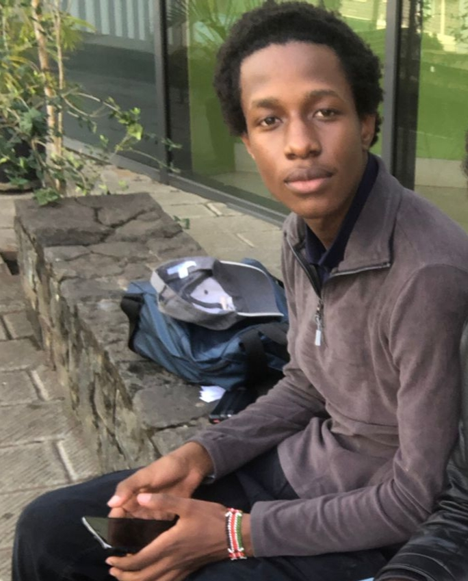

About Me
I am a second-year BSc. Environmental Science student at Jomo Kenyatta University of Agriculture and Technology (JKUAT) with a strong focus on tech-driven circular economy systems. Outside lecture halls, I spend my time building scalable waste recovery software and data pipelines that connect everyday disposal habits to verified environmental reporting. My goal is to deploy practical waste-to-energy and resource recovery infrastructure across campuses, municipalities, and counties.
Fun fact: I am self-taught in Japanese and enjoy spotting local bird species early in the morning before classes start.
See my academic journeyQuick Facts
- Programme: BSc. Environmental Science (2025 – 2029)
- Year of Study: Year 2, JKUAT
- Home County: Kiambu County, Kenya
- Career Goal: Circular Economy Systems Architect & ESG Data Specialist
Environment Fact of the Day
Separating organic waste from plastics and metals at the point of disposal prevents methane emissions in landfills and preserves clean feedstock for Refuse-Derived Fuel (RDF) and composting systems.